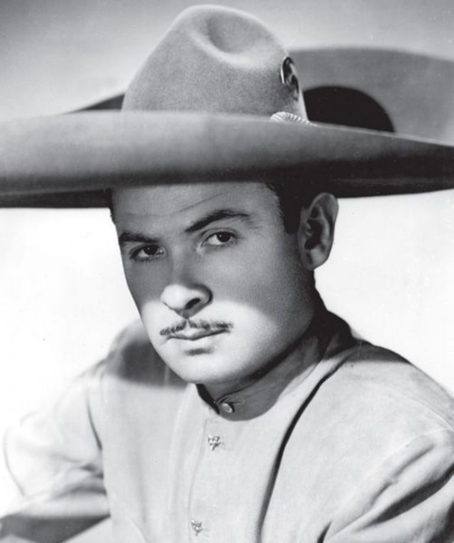
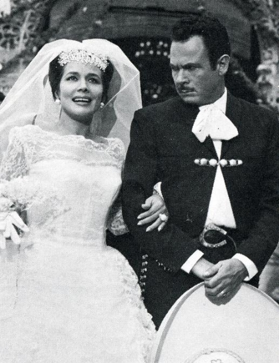
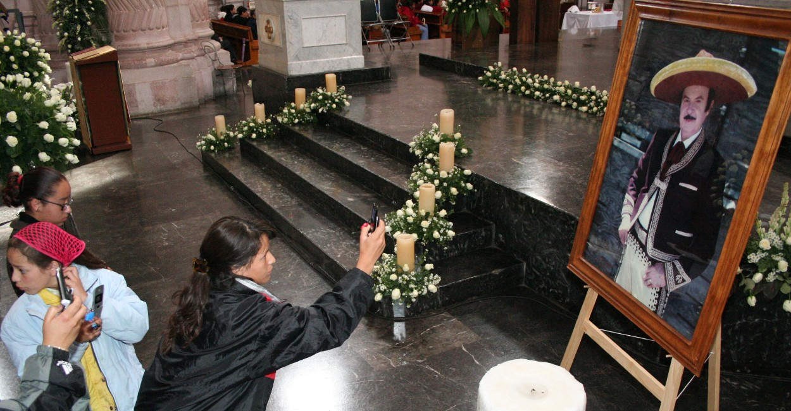
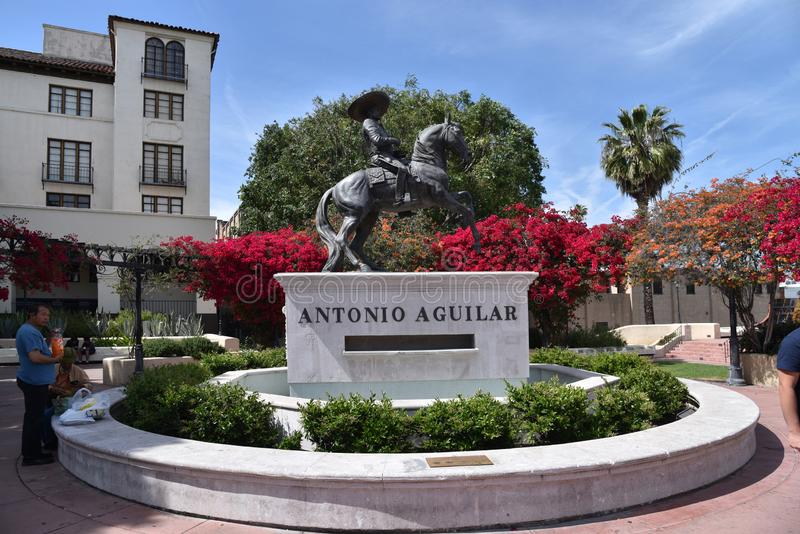

Galeria de imagenes de Antonio Aguilar
Aqui se veran las imagenes con una cierta explicacion del contexto historico de la imagen

Foto de Antonio de Antonio Aguilar cuando Joven

Boda de Antonio Aguilar y Flor Silvestre (1959)

Funeral de Antonio Aguilar (2007)

Estatua de Antonio Aguilar (Estados Unidos, Los Angeles)